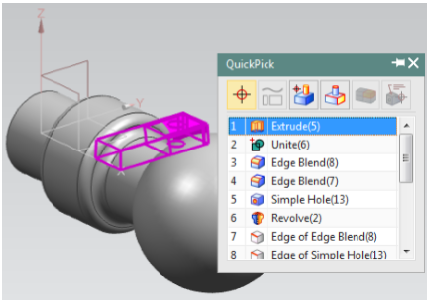

CHAPTER 2 – GETTING STARTED <<
Previous Next >> Stress Analysis
CHAPTER 3 – TWO DIMENSIONAL SKETCHING
第3章-二維草圖
在本章中，您將學習如何在NX 12中創建和編輯草圖。您可以在“建模中的平面”應用程序中直接創建草圖。在大多數情況下，建模從2D草圖開始，然後拉伸，旋轉或掃掠草圖以創建實體。通過繪製草圖可以輕鬆地繪製許多本來很難建模的複雜形狀。在本章中，我們將看到一些草圖繪製概念，然後繼續對某些零件進行草圖繪製和建模。
3.1概述
NX 12草圖是一組命名的曲線，這些曲線連接在一個字符串中，掃描後形成實體。草圖表示該零件的外邊界。曲線在草繪器中的平面上創建。首先，這些曲線的繪製沒有任何確切的尺寸。然後，應用尺寸約束和幾何約束來完全約束草圖。這些將在本章後面詳細討論。
繪製完成後，可以使用多種方法來生成3D零件：
•草圖可以旋轉
•草圖可以拉伸
•草圖可以沿參考線（線）進行掃掠：
從草圖創建的特徵與之關聯；即，如果草圖發生變化，特徵也會發生變化。
使用草圖創建零件的優點是：
•用於創建輪廓輪廓的曲線非常靈活，可用於建立模型在非正規形狀上。
•曲線是參數化的，因此具有關聯性，可以輕鬆更改或刪除它們。
•如果更改了繪製草圖的平面，則草圖也會相應更改。
•當您想要控制功能的輪廓時，草圖很有用，尤其是將來可能需要更改時。草圖可以快速，輕鬆地進行編輯。
3.2繪製草圖的情形
在NX 12中，可以使用兩種方法創建草圖。第一種方法在當前環境和應用程序中創建Sketch。
➢選擇菜單→插入→草圖
在另一種方法中，您可以使用
➢在主工具欄中選擇草圖
無論哪種情況，都會彈出一個對話框，要求您定義草圖平面。屏幕將顯示草圖選項。您可以選擇“草繪平面”，草繪方向和草繪平面類型。使用“創建草圖”對話框創建草圖時，可以通過單擊所示的坐標係來選擇可以在其上創建草圖的平面。這將突出顯示您選擇的平面。選擇的默認平面為XC-YC。但是，您可以選擇在另一平面上繪製草圖。如果事先在模型中創建了任何實體特徵，則任何平面都可以用作草繪平面。
➢選擇XC-YC平面並單擊確定
將顯示草圖平面，並標記X-Y方向。

3.3草圖曲線工具欄
該工具欄包含用於創建常用類型的曲線和样條曲線，編輯，擴展，修剪，圓角等的圖標。每種類型的曲線都有不同的選擇方法和創建方法。 讓我們討論最常用的選項。
輪廓
此選項會根據您在彈出工具欄中選擇的圖標創建直線和圓弧。 您可以通過使用坐標系或通過輸入線的長度和角度來拾取點。
線
此選項將選擇性地僅創建直線。
弧
此選項通過兩種方法之一創建弧。 第一個選項創建具有三個連續點的弧。
第二個選項創建具有中心點，半徑和後掠角的圓弧，或者創建具有起點和終點的圓弧。
圈
創建圓類似於創建圓弧，不同之處在於，圓是封閉的。
快速修剪
這將從曲線的交點修剪延伸的曲線。如果每個實體與另一個實體相交，則此選項通過拆分每個實體來讀取它們，並擦除所選部分。
樣條(樣條函數)曲線
您可以創建具有極點或具有所需曲線度的點的基本樣條曲線。
3.4約束工具欄
所有曲線都是通過拾取點創建的。例如，一條直線有兩個點。在2D環境中，任何點都具有兩個自由度，一個沿X軸，另一個沿Y軸。點的數量取決於要創建的曲線的類型。因此，曲線實體的自由度數是其包含的點數的兩倍。這些自由度可以通過使用固定實體創建約束來消除。實際上，建議您通過直接或間接將實體與固定實體相關聯來刪除所有這些自由度（使草圖完全受約束）。可以通過提供尺寸或幾何屬性（如平行度，垂直度等）來完成。
在NX 12中，智能約束是自動應用的，即NX 12會解釋自動尺寸或幾何約束。您可以通過單擊“連續自動標註”來關閉此選項，如下所示。以下段落顯示瞭如何手動應用約束。
尺寸約束
可以通過給尺寸賦予固定實體（例如軸，平面，坐標系或模型中創建的任何現有實體幾何形狀）來消除自由度。這些尺寸可以是線性，徑向，角度等。您可以在草繪過程中隨時通過雙擊尺寸來編輯尺寸值。
幾何約束
除了尺寸約束之外，還可以提供一些幾何約束以消除自由度。它們包括平行的，垂直的，共線的，同心的，水平的，垂直的，等長的，等等。該軟件能夠為所選實體找到可能的約束集。例如，在下圖中的線上施加一個約束，使其平行於矩形的左側（該線最初與矩形成一定角度）。
顯示草圖約束
單擊此圖標將以白色顯示與該特定草圖中的實體相關的所有選項。
顯示/刪除約束
該窗口列出了與所選任何實體相關的所有約束和約束類型。您可以刪除任何列出的約束或更改約束的順序。
狀態行中顯示不受約束的自由度數。所有這些都應通過應用約束來遵循嚴格的模型來刪除。
3.5範例
3.6練習
3.6.1圓形底座本手冊的幾章中將出於多種目的使用的一種模型是具有十多個組件的簡化的刀桿壓機。我們在本章的示例3.5.1中為這些組件之一建模。另一個組件是圓形底座，用於將工件固定在壓力機下。使用下面給出的尺寸對圓形底座進行建模（尺寸以毫米為單位）。

3.6.2固定器的草圖在第4章的練習之一中，將要求您為固定器建模。建模3D支架需要多個2D草圖。作為該練習的起點，對下圖所示的2D草圖進行建模並保存文件（所有尺寸均以英寸為單位）。

CHAPTER 2 – GETTING STARTED <<
Previous Next >> Stress Analysis